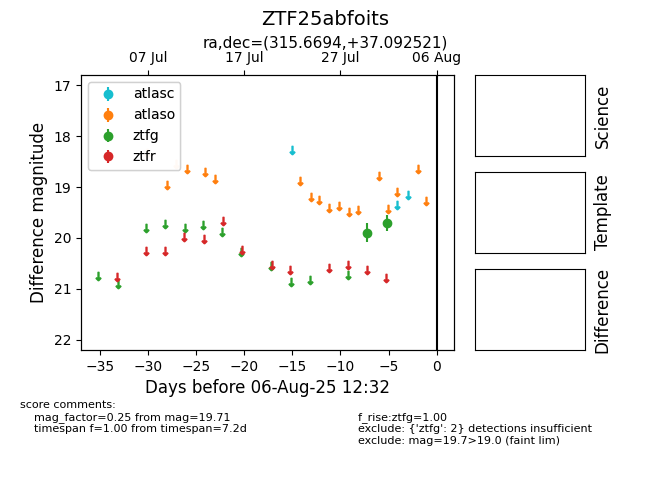

Target ZTF25abfoits at 2025-08-05 23:02, see:
FINK: fink-portal.org/ZTF25abfoits
Lasair: lasair-ztf.lsst.ac.uk/objects/ZTF25abfoits
ALeRCE: alerce.online/object/ZTF25abfoits
alt names
ZTF25abfoits (ztf,fink)
coordinates:
equatorial (ra, dec) = (315.6694,+37.09252)
galactic (l, b) = (80.5180,-6.29586)
photometry
last ztfg=19.71
2 ztfg detections
